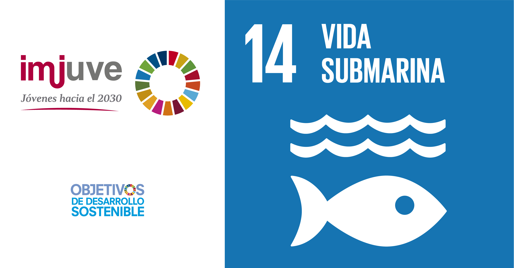

O que é o ODS 14 – Vida na Água?
O ODS 14, Vida na Água é um dos 17 Objetivos de Desenvolvimento Sustentável (ODS) das Nações Unidas, que foi adotado em setembro de 2015 para ser aplicado em todo o mundo e no Brasil. Tem como objetivo assegurar a conservação e o uso sustentável dos oceanos, da vida marinha, dos mares e recursos marinhos. Esse objetivo tem metas específicas que incluem a redução da poluição marinha, a proteção da biodiversidade marinha, o manejo sustentável dos recursos marinhos e a promoção da pesca sustentável. Justificativa da ONU para o ODS 14: Vida na Água
A ONU estabeleceu o ODS 14, “Vida na Água”, como um objetivo fundamental dentro da Agenda 2030 para o Desenvolvimento Sustentável por diversas razões críticas para a saúde do planeta e o bem-estar da humanidade. Contudo, através desse site pretendemos abordar algumas das principais adversidades que enfrentamos.Metas dessa ODS
14.1 Até 2025, prevenir e reduzir significativamente a poluição marinha de todos os tipos, especialmente a advinda de atividades terrestres, incluindo detritos marinhos e a poluição por nutrientes
14.2 - Até 2020, gerir de forma sustentável e proteger os ecossistemas marinhos e costeiros para evitar impactos adversos significativos, inclusive por meio do reforço da sua capacidade de resiliência, e tomar medidas para a sua restauração, a fim de assegurar oceanos saudáveis e produtivos
14.3 - Minimizar e enfrentar os impactos da acidificação dos oceanos, inclusive por meio do reforço da cooperação científica em todos os níveis
14.4 - Até 2020, efetivamente regular a coleta, e acabar com a sobrepesca, ilegal, não reportada e não regulamentada e as práticas de pesca destrutivas, e implementar planos de gestão com base científica, para restaurar populações de peixes no menor tempo possível, pelo menos a níveis que possam produzir rendimento máximo sustentável, como determinado por suas características biológicas
14.5 - Até 2020, conservar pelo menos 10% das zonas costeiras e marinhas, de acordo com a legislação nacional e internacional, e com base na melhor informação científica disponível
14.6 - Até 2020, proibir certas formas de subsídios à pesca, que contribuem para a sobrecapacidade e a sobrepesca, e eliminar os subsídios que contribuam para a pesca ilegal, não reportada e não regulamentada, e abster-se de introduzir novos subsídios como estes, reconhecendo que o tratamento especial e diferenciado adequado e eficaz para os países em desenvolvimento e os países menos desenvolvidos deve ser parte integrante da negociação sobre subsídios à pesca da Organização Mundial do Comércio
14.7 - Até 2030, aumentar os benefícios econômicos para os pequenos Estados insulares em desenvolvimento e os países menos desenvolvidos, a partir do uso sustentável dos recursos marinhos, inclusive por meio de uma gestão sustentável da pesca, aquicultura e turismo
14.a - Aumentar o conhecimento científico, desenvolver capacidades de pesquisa e transferir tecnologia marinha, tendo em conta os critérios e orientações sobre a Transferência de Tecnologia Marinha da Comissão Oceanográfica Intergovernamental, a fim de melhorar a saúde dos oceanos e aumentar a contribuição da biodiversidade marinha para o desenvolvimento dos países em desenvolvimento, em particular os pequenos Estados insulares em desenvolvimento e os países menos desenvolvidos
14.b - Proporcionar o acesso dos pescadores artesanais de pequena escala aos recursos marinhos e mercados
14.c - Assegurar a conservação e o uso sustentável dos oceanos e seus recursos pela implementação do direito internacional, como refletido na UNCLOS [Convenção das Nações Unidas sobre o Direito do Mar], que provê o arcabouço legal para a conservação e utilização sustentável dos oceanos e dos seus recursos, conforme registrado no parágrafo 158 do “Futuro Que Queremos”